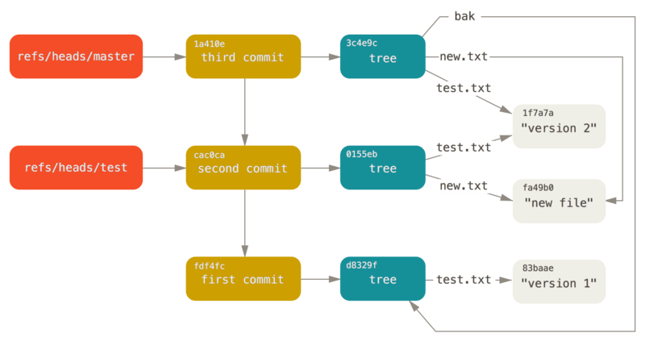

文科生学电脑 - git和版本控制（一）

可能是最全的文科生git使用指南
本文是“文科生学电脑”系列中的一篇文章，关注本专栏，感受一名艺术生眼中的计算机世界。
git快照定格了我们存在的痕迹。借助着git记录的所有过往的美好，我们跳出了生命的局限性，并看到了彼岸的永生之原。在这一刻我们才能如此真切地感受到我们如此鲜活的生命，脆弱却又毫不渺小。
TL;DR
git是一个版本控制工具。这是一个文科生的使用指南。从某种角度来说，git对文科生的作用比程序猿更大，因为文科生需要应对的是海量的”无结构”信息(简称brainstorming)，因此更加需要趁手的工具来整理这些信息。
在git这一工具和其背后的思想风靡计算机领域的今天，计算机之外的领域却不太熟悉这一工具。不得不说这是一个遗憾：在计算机领域git的教程数量过剩，而在其他领域相关的教程却几乎没有。
笔者试图填补这一真空：本文从文科生的需求的角度来介绍我们为什么需要git这一工具。
为什么版本控制对文科生来说可以有
文字就像是代码，多个时间点上的自己就像是一个团队。所以文科生一个人的论文需要用到团队协作代码版本工具。
我们必须要首先了解为什么文科生需要浪费宝贵的时间学习一个工具。
本文要解决的问题是：版本控制工具的什么特性让它在写作（而不是编程）方面成为了不可替代的工具之一？
我们是否遇到过如下的情形?
- 在写论文的时候逐渐发现在排版上占用的时间比写作本身占用的时间更多。
- 在写论文的时候，我们从一个文档开始，然后随着版本和修改的增多，我们的文件夹中多了越来越多的像
草稿1.docx，论文_终稿.docx，论文_真的终稿.docx，论文_真的终稿1.docx之类的文档。
对于第一点，我们会在本文的姊妹篇，“为什么我们要转向纯文本写作”中解决。本文解决的是第二点提到的情况。咱们文科生的写作尤其需要版本控制来管理我们写作的进度，通过了版本控制我们可以更好地将精力放在内容创作上。以上想法促使了我写这一篇git使用指南：git虽然最初是为了计算机代码而设计，但这一工具对文科写作也有奇效。
简而言之，git是一个版本控制工具.或许这么说过于复杂，但如果这么描述或许会让咱们文科生感觉更有共鸣：git是一个对文本的历史追踪工具。将“代码”跟“版本”替换为“文本”跟“历史”，git对文科生写作的潜在优势立刻显现了出来。
版本控制抛开细节来说就是给工作区建立快照.我们可以将快照想象成游戏的存档：通过存档我们可以随时恢复存档时的状态.建立快照之后的好处有很多：
- 备份：可以随时回滚到以前的快照状态。比如如果写砸了，那么可以快速滚回到写砸之前的状态。
- 记录进度：可以查看工作区如何一步一步发展成当前的状态。
简而言之，就是历史记录保留。这个需求是咱们文科工作算是最重要的刚需（虽然很多时候我们无法明确意识到）。
保留历史记录的需求在各个层面都存在。
需求一：数据层面的安全感
如果没有版本控制工具，那么每次我们复制文件都会有隐隐的担忧，怕拷到U盘再拷回来辛辛苦苦写的内容就丢了。这种安全感直接影响我们写作的执行力。
我们在艺术创作的时候，都追求一种完整性：一个好的作品我们可以感觉到这一作品是一个“整体”。而版本控制工具凑巧可以帮我们完成这一点：git自带数据完整性校验，所以我们在移动一个写作项目的时候，我们可以确信数据没有损坏。
以往我们移动数据的时候，总是会不放心，并因此总会反复检查是否每个文件都完整。有的时候，从U盘移动过的文件会莫名其妙损坏，或者是因为软件的关系一个编辑器会毁掉自己之前辛辛苦苦做好的排版。这在潜意识层面很打击我们的写作热情：我们感觉到我们的写作不完整并且碎片化，自己并没有在创作一个完整的作品。
需求二：激发更多灵感
通过git我们可以保留很多项目的元信息，而元信息的好处就是可以获得对一个项目更加深刻的理解(insight)。版本控制工具的一个特性就是：写过的一切都永不消失。这样我们可以看到一个立体的发展轨迹：现在所有的写作是如何从一个字都没有，一步步走到今天的这个状态。
一个写作，我们看到的成品只是这一写作的(很小的)一部分.而对于这一写作的完整描述需要包括这一写作的历史.因此，对事物的版本控制让我们有了对事物更为完整的描述和理解.
用一个比喻来直观地描述：我们将一个内容的每个版本看成一张纸，那么这一内容的所有历史就是一沓纸.然而如果我们只从正面看这张纸而忽视其历史变迁，那么我们看到的东西就缺少深度：
然而，如果我们换一个摄像机角度，那么我们就可以看到这一沓纸的三维结构，因此我们可以有更加有深度的理解：
从这个比喻我们可以看出，版本控制让我们可以更”立体”(上图很直观地解释了为什么我们感到立体)地了解并且控制我们的写作.我们可以看到自己的想法是怎么一步一步从萌芽成为一个完整的作品。
扩展阅读：为什么版本控制对文科生来说必须有
遍身罗绮者，不是养蚕人
最需要一个工具的人群往往跟最了解这一工具的人群不重合。
例如电脑上的各种软件：计算机领域的人们发明出了最高效的写作软件工具链，结果却没有太多需要进行文本写作的场景。而非计算机领域的人往往需要一个功能(甚至比工具的发明者还需要)却往往甚至都不知道这一工具的存在。
笔者对此深有感触：我的一门课的老师曾经在图书馆研究大量音乐历史文献的时候，耗费了大量的时间和精力在”给文献拍照-一张张用邮件发给自己-一张张下载到电脑-一张张打印出来”这一过程上。如果他研究一下看上去属于计算机领域的知识，那么他完全可以直接用照片同步工具搭配一个批量将照片转化并且合并到pdf的脚本来完成任务(或者直接下载一个手机上的扫描app。这个例子我想说的重点不在于知识的难度，而是在于对工具的追求)。在这种情况下，他节省下来的时间可以以天来计。
从某种角度来说，文科生更加需要对自己的写作进行版本控制。而这是由领域的特性决定的。文科的写作因为领域的特性，思路更加不稳定或者说难以捕获。文科的领域中，想法往往更加的contingent。这就是为什么我们往往觉得文科领域的写作需要灵感或者说直觉。
文科和理科如果要说区别，那么最大的一个区别笔者个人认为是”良定义”(这只是一个极为笼统的概括，所以如果有反例也很正常)：理科追求的是良定义的概念，操作的也往往是良定义的概念。而文科往往操作的是更加模糊的概念，因此往往需要直觉的帮忙。理科因为操作的是良定义的概念，所以理科的思维模式往往都是”生成式”的思维：根据已有的资源，算出未知的内容，而这一过程往往是确定性的。
这就直接导致了我们的一个直觉：假设一篇文科的论文丢失(或者更夸张一点，一件艺术作品丢失)，那么我们会觉得很难复原这一论文，因为这一论文的诞生的每一环都相较理科更加依赖作者当时偶然的大脑状态。而理科则不一样，很多步骤是机械的，也就是说理科中很多步骤都可以用计算力算出来。而根据space-time trade-off，这就代表了理科的写作不那么依赖对数据的存储。这就解释了很多我们已有的刻板印象：科学是发现，即使没有一个科学家也迟早会有其他人发现这一科学家的成果。而艺术是创造，如果少了一个艺术家那么大概率永远都不会有相应的艺术作品问世。
这也就是为什么文科的写作其实更加需要版本控制：历史版本如果不保留很可能就永远消失，而对于文科领域，因为想法往往更加的contingent，所以文章中想法的变迁相较理科更为重要(甚至可以说理科更多是以结果为导向，而文科则是以过程为导向)。
历史版本在文科领域的重要性还有另外的一个例子：至少在音乐领域，我们有专门的对音乐手稿以及不同版本的研究，为的就是勾勒出作者的创作轨迹。而理科则完全是以结果为导向：例如数学系中，根本没人关心手稿等具体的版本。这就是为什么数学(以及其他理科领域)中完全只用现代的教科书不仅没问题，而且还是一件好事。
进阶玩法
git最大的优势就是作为程序员自用的工具，可靠性无与伦比，也就是说，任何可能的问题都不是工具的锅，而是工具使用不当。
例如git不存在任何竞争状态(race condition)的问题。我们可以同时运行多个git命令而不用担心因为同时访问相同的数据而导致数据损坏。
这一特性很重要，因为这样我们就可以用脚本来自动化很多工作流。